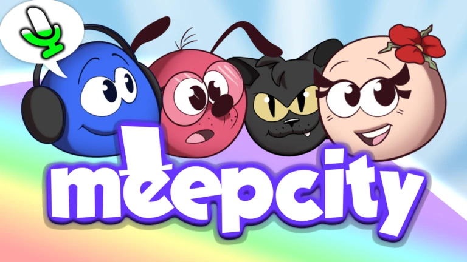

Simulación social
Meepcity
Ayudó a popularizar las experiencias sociales y de convivencia dentro de Roblox. MeepCity es un juego de simulación social que permite a los jugadores crear y personalizar su propio avatar, interactuar con otras personas, decorar casas y tener mascotas llamadas Meeps. Fue uno de los grandes juegos de la primera etapa de expansión de Roblox y se convirtió en el primer juego de la plataforma en superar los mil millones de visitas, marcando un importante crecimiento de los juegos sociales dentro de Roblox.
Jugar a Meepcity